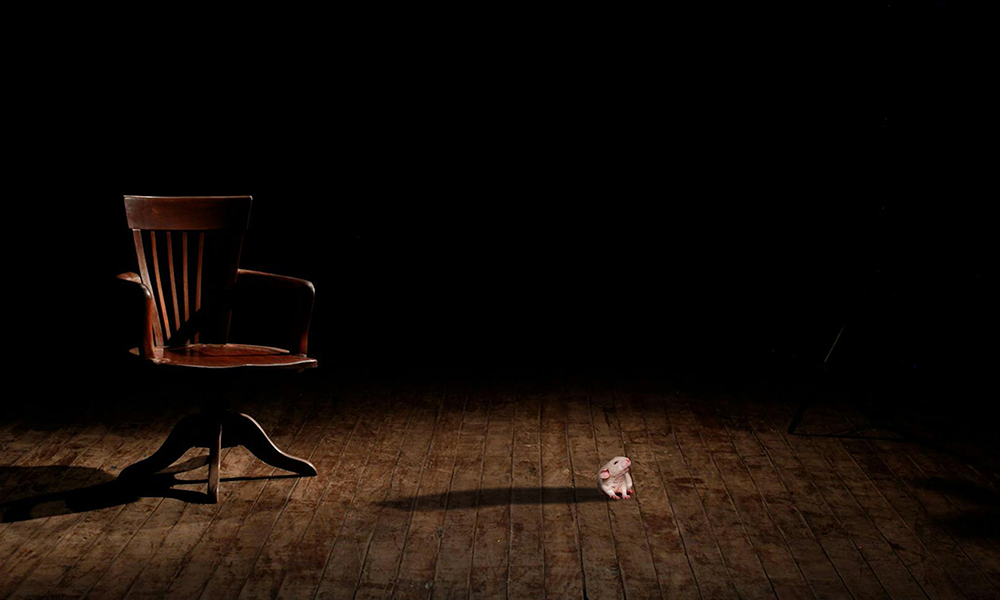
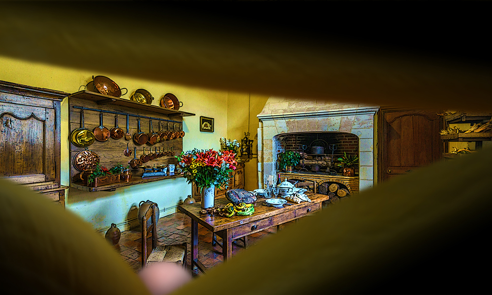

In a nod to the point of this issue's editorial, the story introductions will mention what motivated their selection, though in this case the interest came from the editor's lack of direct experience. It is said there comes a time when every parent has to Let Go. To refuse is to hold them back, to clip their wings, to smother. It must be hard to do, even knowing that the threats and dangers are hypothetical, that children need to be released. But how much harder to set them free when the threats are certain, the dangers real, and the strongest need at hand may be for vengeance?
One of the editor's favourite approaches to speculative fiction is the slice-of-life format, when not yet (or never) existing worlds are realised through what is, for their denizens, everyday experiences not far removed from our own. Hence the immediate appeal of Stephen Power's excursion around a New York City not quite come to pass, but nevertheless familiar.
Introducing new writers to your audience is always rewarding for a magazine editor, but a parallel pleasure is welcoming contributors back to share more of their work. They have to justify it, though: the editor must not fall back on nostalgia, having them back just for old time's sake. Fortunately for me, Addison Smith's strange little stories always have a little something.

Animals make for useful subjects when an author's real subject is one of the biggies, like skewering the dark side of human society or exploring life and death. One of the editor's own early stories used wolves to look at mortality, so finding this piece brought back fond memories – but Lyra Meurer's gently emotive rat tail (excuse me, tale) can speak to anyone.

Queue the annual moan about Things The Editor Hates To Find In The Slushpile, attached to an example of the same which he has happily selected for publication. In this case, as the title surely signals, we're in selkie territory, but what makes mythological spec-fic work is when the myth in question isn't what the story is actually about – in this case, too.

Another appealing mode in spec-fic is when the thematic space we think we're in turns out not to be the case, or not quite, or maybe so but maybe no - you catch my drift. Here you might say (if you were prone to bad puns, as the editor provenly is) that this story hinges not so much on the nature of genre switches as the nature of genre's witches… I'll get my coat.
It wouldn't be Spring without a new review from Mattia Ravasi, and – as the editor counts down the days to Eastercon, Britain's premier fan-driven science fiction convention – it seems he's selected a most appropriate subject. Where better for someone to walk the fine line between fan and fanatic? On the page, please. On the page…
Rounding out our first issue of the latest End Times Period, here are three more (technically) short short story reviews – although in this case the nature of the story-telling medium boasts a little more variety than usual. Like Mythaxis itself, all these are freely available to read online, and this editor enjoys helping raise awareness of whatever else is out there, so when you're done reading here why not check these out next?